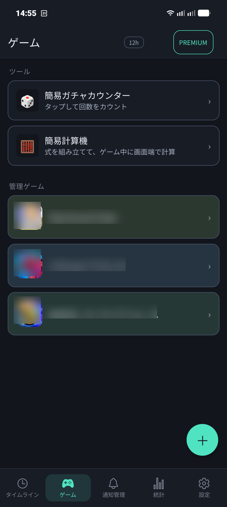
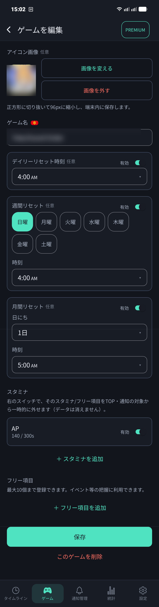
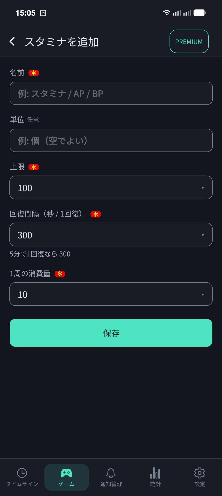
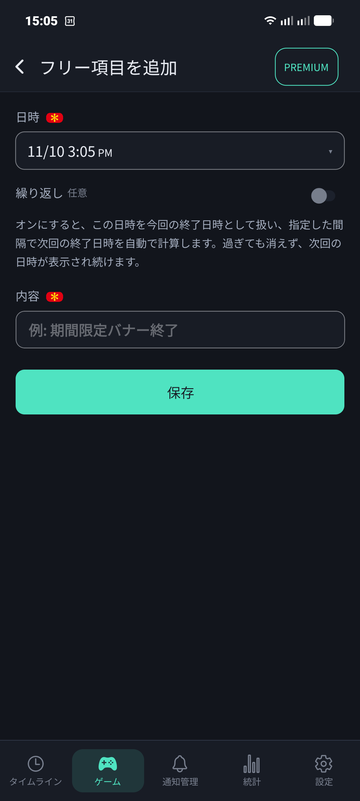
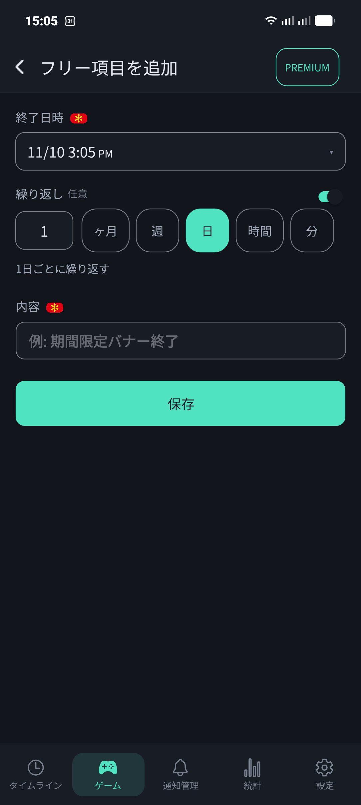

➕ 2. ゲーム登録とスタミナ・フリー項目設定
下部メニューの「ゲーム」タブでは、管理するゲームの追加・編集や、各ゲーム固有のスタミナ仕様、リセット時刻、イベント期限などを柔軟にカスタマイズできます。

登録済みゲームの一覧と、右下の「＋」新規追加ボタン
📝 ゲームの登録・基本編集
「＋」ボタンをタップすると、新しいゲームの登録画面が開きます。既存のゲームをタップすると、いつでも設定内容を編集できます。

ゲーム編集画面：アイコン、名称、リセット時刻、スタミナ・フリー項目をまとめて設定
- アイコン画像（任意）：端末内の画像を選んで登録できます。正方形に切り抜かれ、タイムラインや一覧でひと目でゲームを識別できます。
- ゲーム名（必須）：管理したいゲームのタイトルを入力します。
- デイリーリセット時刻（任意）：ゲームの日付変更時刻（例：午前4:00、午前5:00、深夜0:00など）を設定します。
- 週間リセット（任意）：ウィークリーミッションのリセット曜日（例：月曜日）と時刻を設定します。
- 月間リセット（任意）：月初1日のリセット時刻などを設定できます。
⚡ スタミナの追加・詳細設定
「＋ スタミナを追加」をタップすると、そのゲームのスタミナ設定画面が開きます。AP・BP・エネルギーなど、1つのゲームに複数のスタミナを登録することも可能です。

スタミナ追加画面：名称、上限、回復間隔（秒）、1周あたりの消費量を設定
項目 1
スタミナの名前・単位
「スタミナ」「AP」「BP」などゲーム内の呼び名を入力します。単位（例：個）は空欄でも構いません。
項目 2
上限（最大値）
ご自身のプレイヤーランクやアカウントでのスタミナ上限値を入力します。ランクアップで上限が増えた場合も、ここからいつでも数値を更新できます。
項目 3
回復間隔（秒 / 1回復）
スタミナが「1」回復するのにかかる秒数を指定します（例：3分なら180秒、5分なら300秒、6分なら360秒）。これにより、正確な全快時刻が秒単位で算出されます。
項目 4
1周の消費量
メインで周回するクエストやイベントのスタミナ消費量を設定します。タイムラインの「1周消費」ボタンを押した際、この設定値が引かれます。
🎯 フリー項目でイベントやガチャ期限を管理
「＋ フリー項目を追加」を利用すると、ゲーム内の期間限定イベント終了日時、ピックアップガチャ終了、交換所の有効期限などを自由に登録できます（各ゲーム最大10個まで）。

フリー項目追加：日時と内容（例：期間限定バナー終了）を入力

繰り返し設定：1ヶ月・1週・1日・時間・分ごとの定期イベントに対応
💡 繰り返し機能の便利ポイント
「繰り返し」スイッチをオンにすると、指定した間隔（例：1日ごと、1週間ごと）で次回の終了日時を自動計算します。期限が過ぎても消去されず、常に次回の期限が表示され続けるため、定期ミッションの管理に最適です。